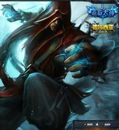

英雄简介
盲僧,别名瞎子,李青,盲僧。盲僧作为常驻的神级打野，打野效率和gank能力都非常优秀，可以说是打野英雄中的代表人物。盲僧在打野方面几乎无可挑剔，英雄本身在前期也很强势，唯一缺点就是后期较为乏力。
2015年最流行的R闪现，闪瞎了众多小学生的狗眼。
英雄技能

盲僧有四个技能，就不介绍了，E可以确保隔兵消耗加减速减攻速，也是可以作强拼的开头，E后直接上去对点，并找到能Q到人，然后Q平砍WQ，平砍W，平砍。瞎子每次使用技能都会刷新被动使自己后2次的攻击速度有提高加成。所以技能尽可能配合平砍一起用伤害可以最大化，但不要最求加成2次而不像浪费，舍不得用技能，毕竟技能都是不要蓝的，在对拼的时候舍不得技能可能犯造成自己吃亏。在拼的时候尽可能保证Q得到人，感觉Q不到或者Q已经扔了没打到人，就果断W后侧，并利用第二次W吸血先回复一下，等待下次技能好再进攻，不要盲目赌命。
英雄出装
瞎子出防御装，必不可少的是眼石。
后期出肉是一个不错的选择。